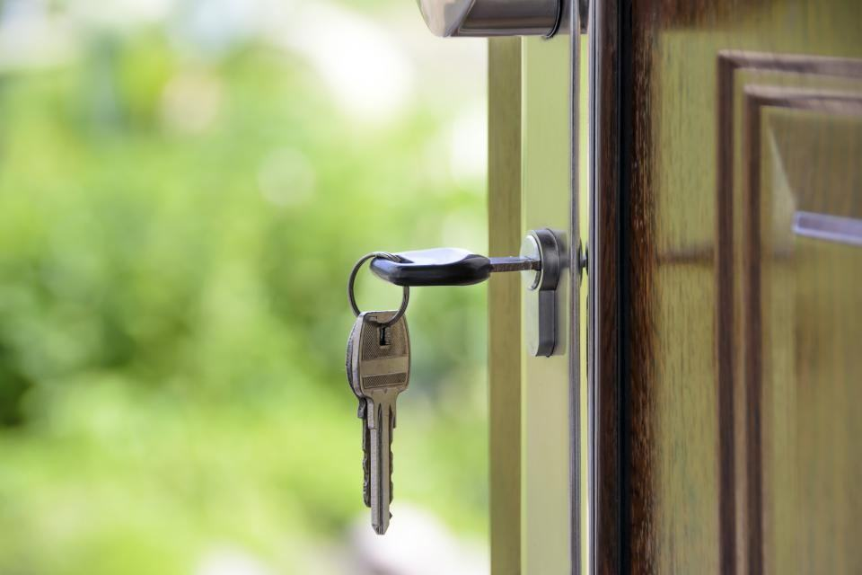

Klarar läsarna verkligen −40 °C?
Ja. Utomhusläsarna har värmeelement och provas i köldkammare innan leverans. Vi har haft system i drift i över 15 vintrar i fjällen.
Vad händer vid strömavbrott?
Varje uppkopplad dörr har batteribackup i minst 72 timmar. Elektroniska cylindrar drivs av batteriet i nyckeln och påverkas inte.
Måste vi byta alla lås på en gång?
Nej. De flesta kunder börjar med ytterdörrar och känsliga utrymmen och bygger ut systemet över flera år.
Kan systemet kopplas till vårt personalregister?
Ja, vi har färdiga kopplingar till de vanligaste HR- och katalogtjänsterna så att behörigheter följer anställningen.
Hur fungerar driftcentralen?
Operatörerna ser larm och dörrstatus, öppnar på distans efter identifiering och hjälper användare som inte kommer in. Bemannad dygnet runt.
Vad kostar ett passersystem?
En uppkopplad dörr kostar normalt 14 000–22 000 kr installerad, beroende på dörr och läsare. Drift och licens från 95 kr per dörr och månad.
Vilken anläggning ska skyddas?
Vi bygger passersystem som fungerar i 40 minusgrader, på 200 kilometers avstånd och utan att någon behöver åka ut.
Våra tjänster- 01
Molnbaserat passer
Behörigheter som styrs från webben, oavsett var dörren sitter.
- 02
Vindkraft och energi
Lås för turbiner, ställverk och nätstationer i fjällmiljö.
- 03
Serverhallar
Flerstegsautentisering och loggning för datacenter.
- 04
Byggarbetsplatser
ID06-läsare och elektronisk personalliggare på grindarna.
- 05
Elektroniska cylindrar
Nycklar med behörigheter som uppdateras och kan spärras.
- 06
Integration med larm
Passer, inbrottslarm och kameror i samma gränssnitt.
- 07
Driftcentral 24/7
Vi övervakar dörrar och öppnar på distans dygnet runt.
- 08
Boka genomgång
En tekniker går igenom era dörrar och befintliga system.
Turbiner, hallar och skolor


 01
01ISO 27001
Certifierad informationssäkerhet för all hantering av behörigheter och loggar.
 02
02Auktoriserat elinstallationsföretag
Registrerade hos Elsäkerhetsverket för installation av elslutbleck och läsare.
 03
03ID06-ansluten leverantör
Läsare och personalliggare godkända för ID06-kort på byggarbetsplatser.
 04
04Låsteknik enligt SLR
Sveriges Låssmeders Riksförbund – mekanisk och elektronisk låsteknik.
”Vi vill att ingen ska behöva köra tio mil för att låsa upp en dörr. Det är egentligen hela affärsidén.”


Illustrationsbilder

Tjugo år med lås på distans
- 2 300dörrarUppkopplade mot driftcentralen
- −40 °CLägsta drifttemperatur
- 46anställdaI tre län
- 72timBatteribackup per dörr
Färre mil i bil, fler dörrar på distans
Varje dörr vi kan öppna på distans är en resa som inte behöver göras. Under 2025 öppnade driftcentralen 11 800 dörrar på distans, vilket motsvarar omkring 260 000 sparade bilkilometer för våra kunder.
Läs om hur vi arbetar 0111 800distansöppningar 2025
0111 800distansöppningar 2025 02260 000 kmsparade bilresor för kunderna
02260 000 kmsparade bilresor för kunderna
0399,9 %tillgänglighet i driftcentralen
Illustrationsbilder
Tre kontor och en driftcentral
 01Huvudkontor, Kolvägen
01Huvudkontor, KolvägenMittlås Sundsvall
Medelpad och Hälsingland
22 tekniker och projektledare som täcker Sundsvall, Timrå, Härnösand och Hudiksvall.
Läs mer 02Östersund
02ÖstersundMittlås Jämtland
Fjäll, vind och kraft
Elva tekniker med vinterutrustning och snöskoter för anläggningar från Åre till Strömsund.
Läs mer 03Örnsköldsvik
03ÖrnsköldsvikMittlås Höga Kusten
Industri och datacenter
Åtta tekniker med inriktning på processindustri och serverhallar längs kusten.
Läs mer 04Sundsvall, dygnet runt
04Sundsvall, dygnet runtDriftcentralen
2 300 dörrar på en skärm
Fem operatörer som övervakar larm, öppnar på distans och hjälper användare som inte kommer in.
Läs mer